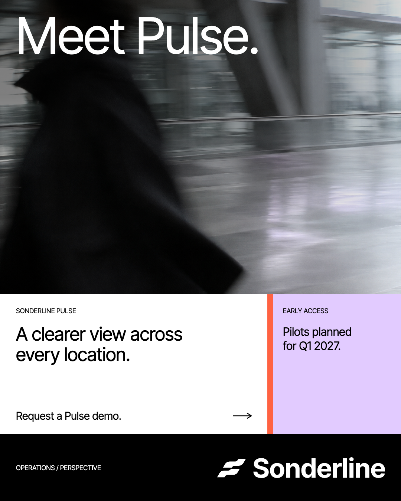
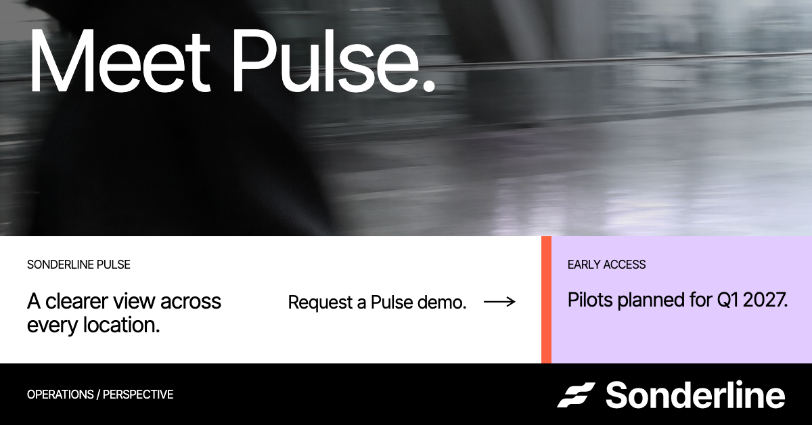
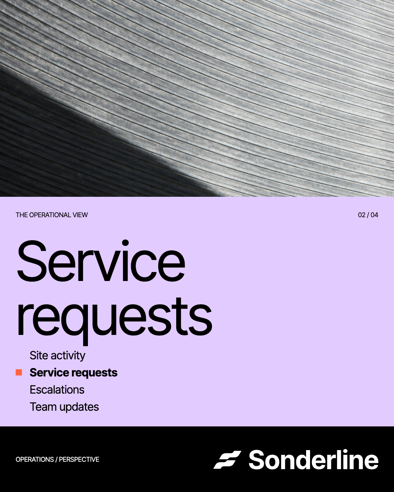
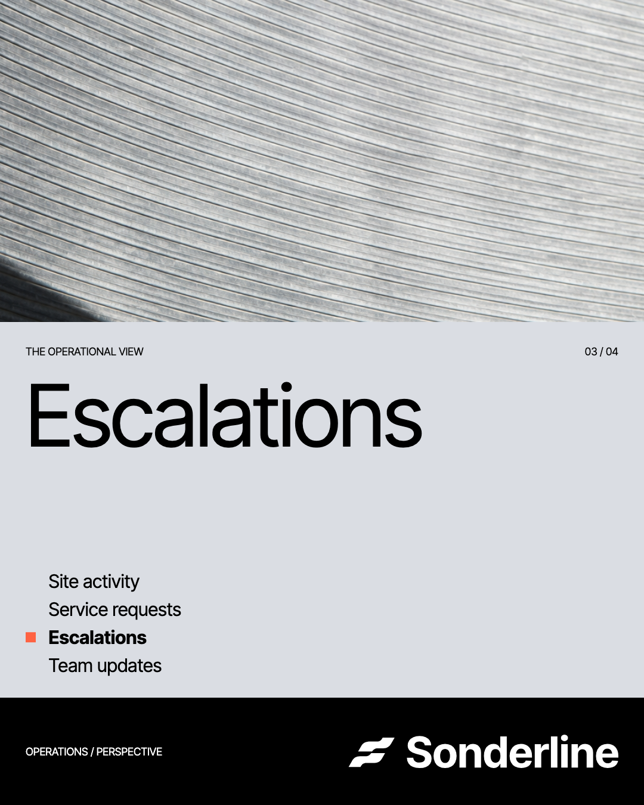
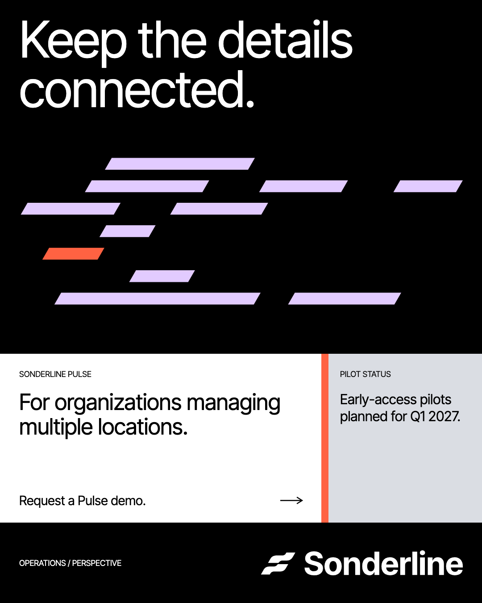
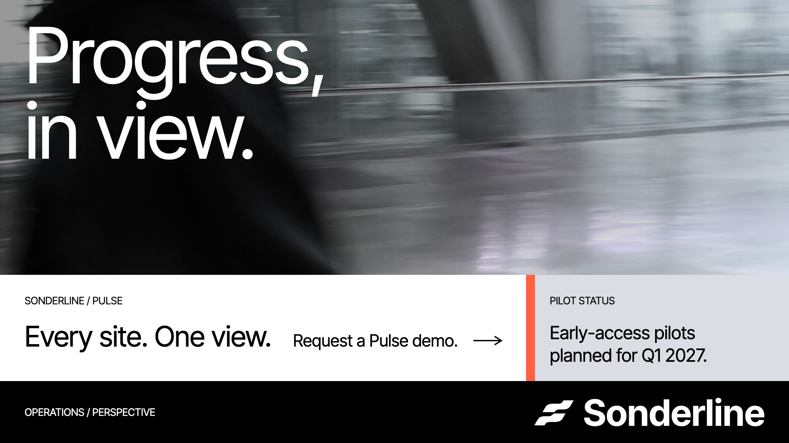

Sonderline Social System
Sonderline Social System
Sonderline Social System
Sonderline Social System
Deliverables · made with the system
This page shows a launch post in four formats, a six-frame carousel, two video posts (one also in 16:9) and three presentation slides. They are different types of request, all produced from the same rules, engine and checks, and later requests are produced the same way.
D1 · Early-access launch post · all checks pass
Why I chose it: a team preparing a launch requests announcements often, and each one is needed in every format. Brief: product marketing wants demo requests from operations leaders at organisations with many sites, in feed, square, link card and story formats. Repeat requests: the next announcement is a new spec with different approved lines and a different crop, and the engine produces the four formats in a few seconds. For each crop, the engine set a scrim between 50% and 55% to keep the headline contrast above 5:1.




In the story format, all text and the logo stay clear of the top 250px and bottom 340px, where the platform's interface appears.
D2 · "Site signals" carousel · copy and checks pass frames 1 and 6: the brand lead needs to confirm the Contour graphic
Why I chose it: explainer carousels are a common request, and they test whether a sequence of frames stays consistent. How it works: one photo continues across frames 2 to 5, so the image moves as you swipe (the guide's motion page asks for imagery to carry the movement). The current item is shown in bold with a vermilion marker, so it is not indicated by colour alone (p06). Repeat requests: the same template works for any list of approved items, such as the three capabilities.






Video posts · made in the Video Studio · all checks pass the brand lead needs to confirm the Contour graphic and the footage
The footage in these videos was generated from the two supplied photos with Google Veo 3.1 Fast, so the people and the light actually move rather than a still being panned. The videos use the same rules, layouts and checks as the still posts. Each scene's length is counted in beats of the music, and the music excerpts start on a bar line, so every scene change lands on a beat. The first bar is quiet, and the headline arrives on the drop in bar two. Contour lines move over the footage and pulse on each beat. Each line of type rises into place and then holds still, as the guide's motion page asks. Every scene is checked like a still image at the start, middle and end of its footage.
Limits: the footage comes from two stills, so variety is limited. A few distant figures in one clip are flagged for the designer to confirm that no face is recognisable. The music is an excerpt of a track supplied by Jon Toews. The videos are designed to work with the sound off.
Additional content type · presentations · all checks pass
D3 is three 16:9 slides based on the guide's presentation page (p11), made with the same engine, rules and checks. They export as PNG and PDF. Editable PowerPoint export has not been built yet.



Human review · an output I would refine before delivery
The brief from a regional team was: "Lead with escalations: our sales team says Pulse cuts escalation response times by 40%. Use the metal photo, keep it bright."


Each version can be opened in the Social Studio to see the checks and approvals.